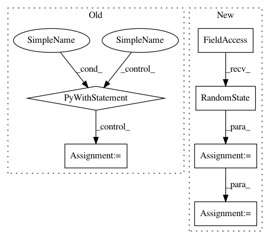

0accec731f7451091ef8844db1ab5df3b3d88e6f,examples/vision/cifar100/multi_device_multi_process_classification.py,,train,#,117
Before Change
monitor_time = MonitorTimeElapsed("Training time", monitor, interval=100)
monitor_verr = MonitorSeries("Test error", monitor, interval=10)
with data_iterator_cifar100(args.batch_size, True) as tdata, \
data_iterator_cifar100(bs_valid, False) as vdata:
// Training-loop
for i in range(int(args.max_iter / n_devices)):
// Validation
After Change
monitor_err = MonitorSeries("Training error", monitor, interval=10)
monitor_time = MonitorTimeElapsed("Training time", monitor, interval=100)
monitor_verr = MonitorSeries("Test error", monitor, interval=10)
rng = np.random.RandomState(device_id)
tdata = data_iterator_cifar100(args.batch_size, True, rng)
vdata = data_iterator_cifar100(bs_valid, False)
// Training-loop
for i in range(int(args.max_iter / n_devices)):
In pattern: SUPERPATTERN
Frequency: 3
Non-data size: 6
Instances
Project Name: sony/nnabla
Commit Name: 0accec731f7451091ef8844db1ab5df3b3d88e6f
Time: 2017-10-26
Author: Kazuki.Yoshiyama@jp.sony.com
File Name: examples/vision/cifar100/multi_device_multi_process_classification.py
Class Name:
Method Name: train
Project Name: sony/nnabla
Commit Name: 0accec731f7451091ef8844db1ab5df3b3d88e6f
Time: 2017-10-26
Author: Kazuki.Yoshiyama@jp.sony.com
File Name: examples/vision/cifar100/multi_device_multi_thread_classification.py
Class Name:
Method Name: train
Project Name: sony/nnabla
Commit Name: 699ce9a0d6e19852f5d6171f86265b718bc860f8
Time: 2021-03-01
Author: woody.li@sony.com
File Name: python/src/nnabla/utils/nnp_graph.py
Class Name: NnpLoader
Method Name: __init__